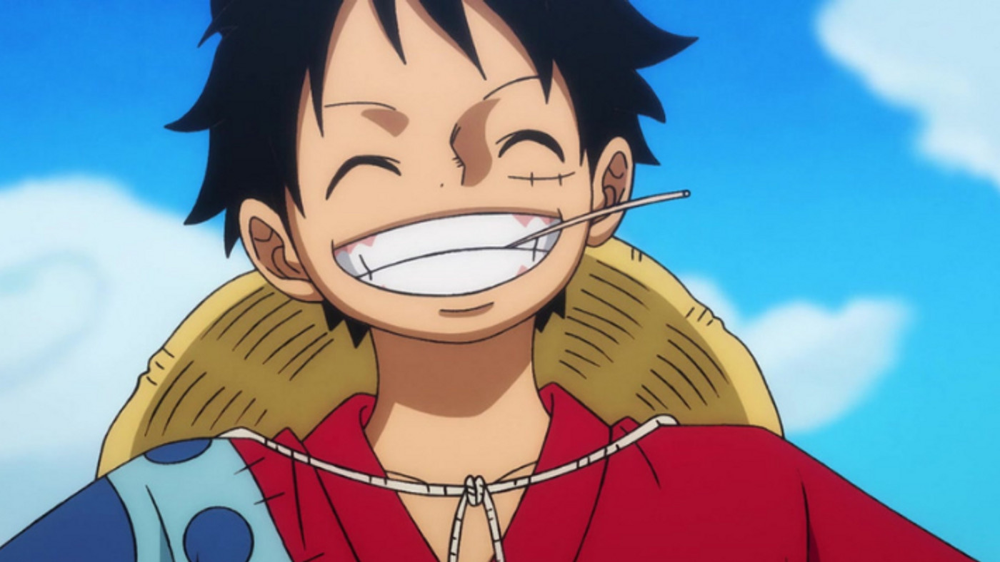

1 < 6 > 5 & ♠ ♥
One Piece
inline
BLOCK
Bonclay's Wise Words
One may stray from the path of a man,
one may stray from the path of a woman,
but there is no straying from the path of a HUMAN!
All friends must scatter into the sky of truth, and blossom!
OKAMA WAY!
One Piece (stylized in all caps) is a Japanese manga series written and illustrated by Eiichiro Oda. It has been serialized in Shueisha's shōnen manga magazine Weekly Shōnen Jump since July 1997, with its individual chapters compiled in 107 tankōbon volumes as of November 2023. The story follows the adventures of Monkey D. Luffy and his crew, the Straw Hat Pirates, where he explores the Grand Line in search of the mythical treasure known as the "One Piece" in order to become the next King of the Pirates.
The manga spawned a media franchise, having been adapted into a festival film by Production I.G, and an anime series by Toei Animation, which began broadcasting in 1999. Additionally, Toei has developed fourteen animated feature films, one original video animation, and thirteen television specials. Several companies have developed various types of merchandising and media, such as a trading card game and numerous video games. The manga series was licensed for an English language release in North America and the United Kingdom by Viz Media and in Australia by Madman Entertainment. The anime series was licensed by 4Kids Entertainment for an English-language release in North America in 2004 before the license was dropped and subsequently acquired by Funimation in 2007.
Synopsis
Setting
List of One Piece characters
The world of One Piece is populated by humans and other races such as dwarves (more akin to faeries in size), giants, merfolk, fish-men, long-limbed tribes, long-necked people known as the Snakeneck Tribe, and animal people (known as "Minks"). The world is governed by an intercontinental organization known as the World Government, consisting of dozens of member countries. The Navy is the sea military branch of the World Government that protects the known seas from pirates and other criminals. There is also Cipher Pol which is a group of agencies within the World Government that are their secret police. While pirates are major opponents against the Government, the ones who really challenge their rule are the Revolutionary Army who seeks to overthrow them. The central tension of the series pits the World Government and their forces against pirates. The series regularly emphasizes moral ambiguity over the label "pirate", which includes cruel villains, but also any individuals that do not submit to the World Government's authoritarian—and often morally ambiguous—rule. The One Piece world also has supernormal characteristics like Devil Fruits,[Jp 1]which are mysterious fruits that grant whoever eats them transformative powers. Another supernatural power is Haki,[Jp 2] which grants its users enhanced willpower, observation, and fighting abilities, and it is one of the only effective methods of inflicting bodily harm on certain Devil Fruit users.
Production
Concept and creation
Eiichiro Oda's interest in pirates began in his childhood, watching the animated series Vicky the Viking, which inspired him to want to draw a manga series about pirates.[2] The reading of pirate biographies influenced Oda to incorporate the characteristics of real-life pirates into many of the characters in One Piece; for example, the character Marshall D. Teach is based on and named after the historical pirate Edward "Blackbeard" Teach.[3] Apart from the history of piracy, Oda's biggest influence is Akira Toriyama and his series Dragon Ball, which is one of his favorite manga.[4] He was also inspired by The Wizard of Oz, claiming not to endure stories where the reward of adventure is the adventure itself, opting for a story where travel is important, but even more important is the goal.[5]
Notes on Luffy's Family
- Siblings
- Sa D. Bo
- Portgas D. Ace
- Parents
- Monkey D. Dragon
- Mother Unidentified

By the way, my favorite character is Bonclay2
1/2 + 1/2